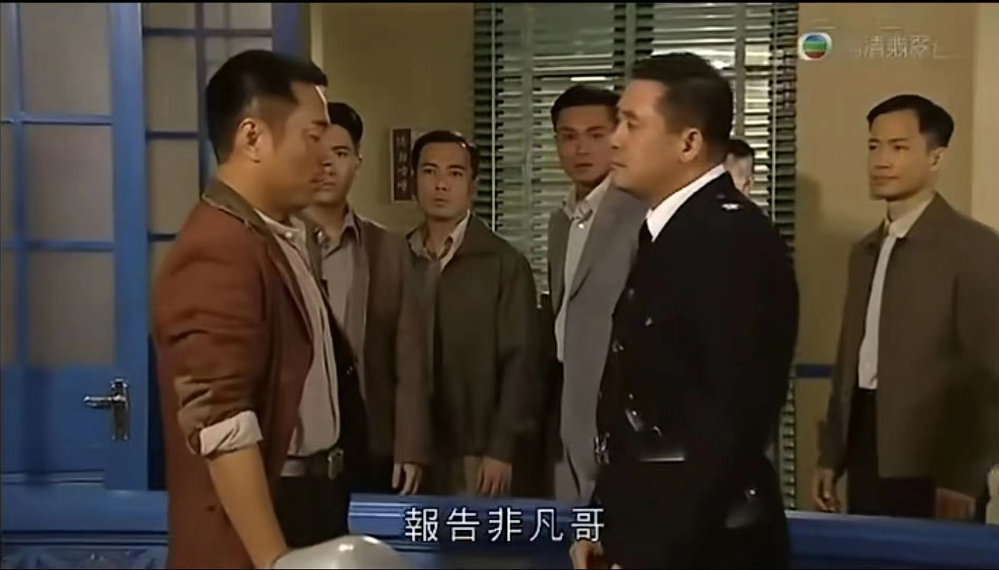
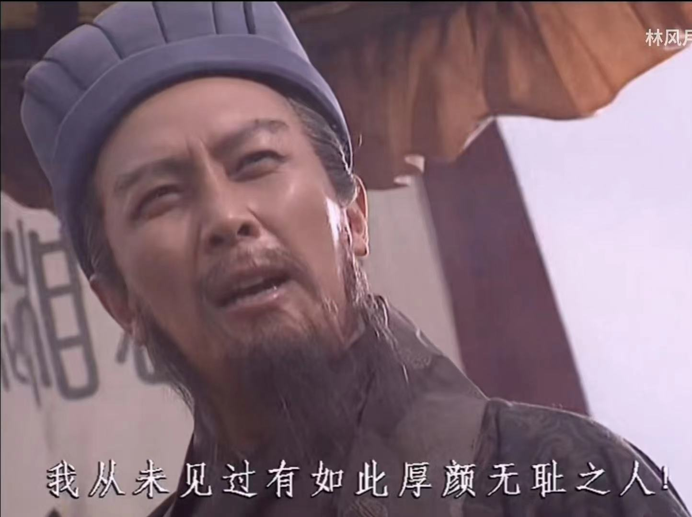

2016 经典鬼畜的诞生：流传至今的鬼畜故事
简介：
与其说是2016年，其实更准确的说法为2016年及其以前的鬼畜。
我将2016及其以前的鬼畜统称为“经典鬼畜”，从感性的角度来讲，即使经过岁月冲刷，这些鬼畜依然能让你津津乐道。
就像贝多芬已不是时代的主旋律，但不可否认的是，它们依然是好作品。
鬼畜作品：
年度top鬼畜：梁非凡与刘醒间的爱恨情仇 
(点击图片即可观看)
该鬼畜出自于香港电视剧《巾帼枭雄之义海豪情》。
鬼畜中的主角为警察刘醒，以及他的上司梁非凡。
而这段鬼畜常为世人津津乐道的便是那句“吔屎了，梁非凡！”。
虽是粗鄙之语，其中却饱含了刘醒对于压迫的愤懑和对于独立的渴望。
不可否认，假肥料金坷垃的广告有着出色的构思。
复古的色彩与画质，铸就了成为经典鬼畜的基本。
其台词更是精髓所在，简洁，明了，却不失格调。
剧情富有国际视野，而台词则以以小见大的方法，充分演绎了当时的国际局势。
我从未见过如此厚颜无耻之人！ 
诸葛亮诠释了何为三国时期顶级喷子。
然而，喷子本身并不可怕，可怕的是句句合情理。
心怀愧疚者，则会被这排山倒海的论断而击垮。
极致的攻防转化（正片：从1分19秒开始）（诸葛亮part：从4分2秒开始）。